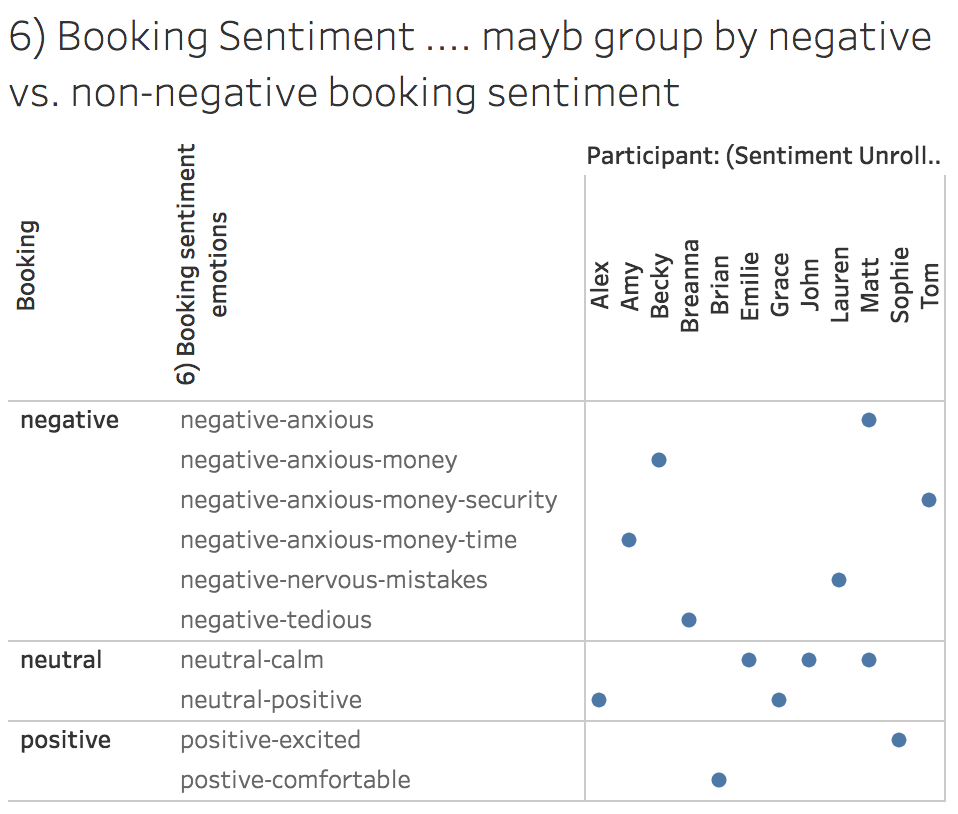
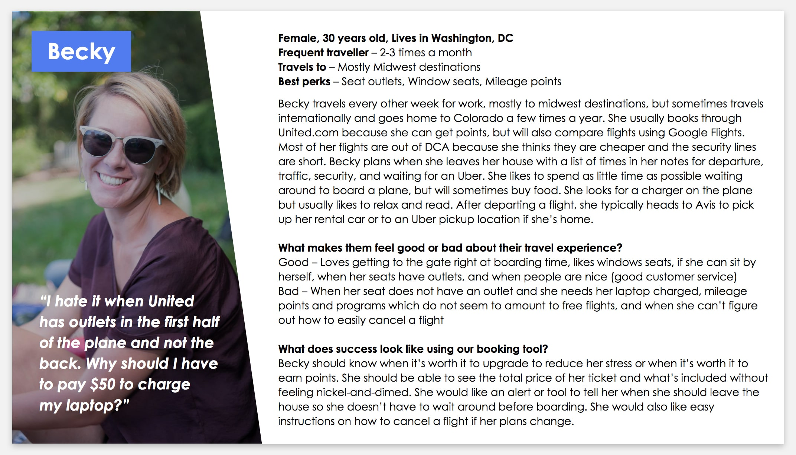
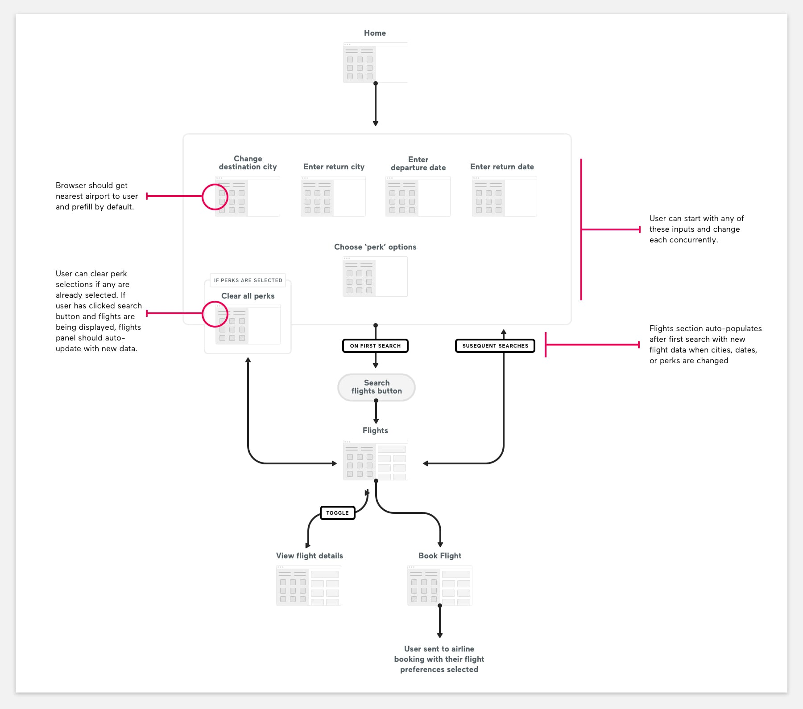
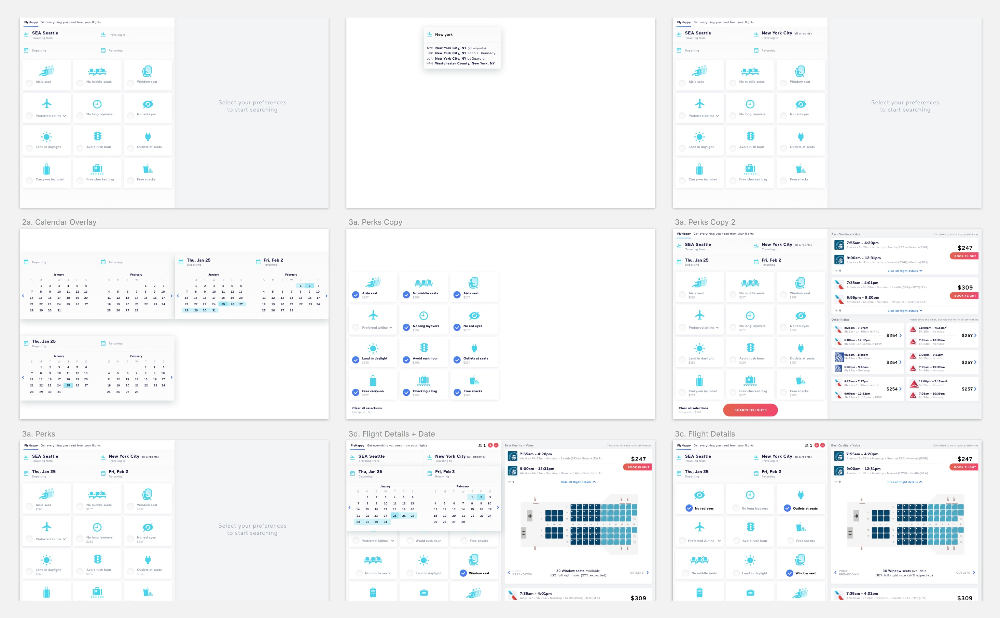

This project was part of a two-month course in user-centered design at the University of Washington. I completed it with three other team members and chose to research, redesign, and user test a flight booking app. While each team member was involved in all stages of the project, I led the designing and prototyping phase while also taking on a majority of the project management.
Problem & Solution
Most booking websites allow the user to sort through the many flight options that are available with price being the primary factor. Travel bookers are unable to easily choose a flight that matches their unique preferences when flying, or even see if the flight they booked matches those preferences. While price is important to people who are booking flights, users should to be able to sort and view flights based on their unique preferences and expectations.
A website that allows users to dictate what they want their flight experience to be and then immediately receive search results that fit those expectations. Additionally, it should inform the user how the specific flight experiences they requested impact the final cost of their ticket to respect the important part that price plays when people make flight booking decisions.
Process
1. Research
In addition to gathering competitor research (of which there is a saturated field), I conducted four interviews & three observations of people using their favorite flight booking tool. Overall, our team conducted twelve interviews and observations, and used the information gathered about habits and preferences to graph out the relationships between this data.
From the data, I distilled the information into a case study about one of my interviewees, Becky, because she represented a subset of users who are more focused on business travel and domestic flights around three to four hours.
Conducting this research enabled us to decide which needs and wants travellers look for when booking flights, and include these as specific filtering criteria in our prototype.
Histogram of flight preference commonalities
Tableau chart of booking sentiment
Analysis of interview data
Becky's case study
2. Design & Prototype
I contributed a bunch of sketches to our team review, which ideated over things like filtering choices, user flows, and marketing integrations. We ultimately chose one of my sketches to move forward as the basis of our design. I then started designing the interface in Sketch because we wanted to use InVision to tie screens together for this project, which would give my other team members an opportunity to explore both tools.
After experiencing an issue with InVision not allowing users to select any combination of perks at once and have those screen partials display simultaneously, I switched to finishing an earlier version of the prototype I started in HTML, CSS, and Javascript. The JS toggles the search flight button after the fields for airports and dates are filled in and controls which flight options (based on a curated list of real flight data) are displayed based on which perks are selected. Ultimately this method allowed us to test with more accuracy which flight options were more important to users.
Initial sketch of layout with notes
Userflow of booking process

Resketch of layout with notes on added elements
Collection of Sketch artboards for first design iteration
3. Testing & Iteration
After completing our prototype, we tested the live version with several participants using the same prompts. These included: “Imagine you’d like to book a flight from Seattle to New York from January 25th to February 2nd. Show me how you’d do that.” and “Imagine that you’d like to book a flight with the same cities and dates as before, but now you are traveling for business and would like to make sure you have wifi, an outlet, and plenty of legroom on the flight in order to do your work during the trip. What would you do?” We wanted to make sure we tested both for individual preferences without much guidance and difference scenarios.
Eight people were tested across our four-person teams. Usability issues were aggregated and ranked according to number of people affected, and the Usability Problem Severity rating described in Jakob Nielsen’s 1/1/95 article Severity Ratings for Usability Problems for NN/g. Our top two issues involved people not corresponding the icons for the ‘perks’ chosen with the icons underneath the flights, and confusion with understanding what the price underneath the ‘perks’ meant.
To address these two issues, we did a quick iteration of our prototype with plans to retest. For people not corresponding the icons on the left in the filter with icons underneath the flights in results, we decided to show only the icons which users had selected (not all present on a flight), change the colors to be more accurate, increase the size of the icons, and add the icons to the other flights in addition to the recommended one. For people experiencing confusion understanding the price underneath the ‘perk’ we decided to include a hover tooltip as a quick fix to test if this information should be included at all or the price removed entirely.

Gif of prototype in action. View the live prototype.
Copyright © 2018 Klare Frank. Portraits by Michelle Moore.